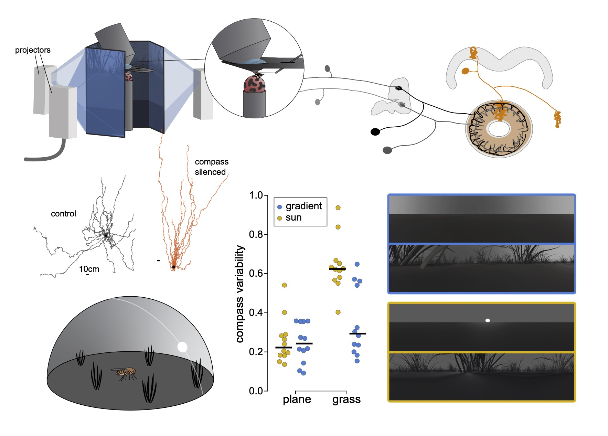

Maintaining a stable head direction representation in naturalistic visual environments
Article | Haberkern H, Chitnis SS, Hubbard PM, Goulet T, Hermundstad AM, Jayaraman V (2022).
bioRxiv, 2022.05. 17.492284
Article | Haberkern H, Chitnis SS, Hubbard PM, Goulet T, Hermundstad AM, Jayaraman V (2022).
bioRxiv, 2022.05. 17.492284
Article | Haberkern H, Basnak MA, Ahanonu B, Schauder D, Cohen JD, Bolstad M, Bruns C, Jayaraman V (2019).
Current Biology 29(10) 1647-1659. e8
Article | Haberkern H, Hedwig B (2016).
J Exp Biol. 219(Pt 22):3575-3586.
Article | Eschbach C, Cano C, Haberkern H, Schraut K, Guan C, Triphan T, Gerber B (2011).
J Exp Biol. 214(Pt 23):3897-905
Article | Hulse BK *, Haberkern *, Franconville R *, Turner-Evans DB *, Takemura S, Wolff T, Noorman M, Dreher M,
Dan C, Parekh R, Hermundstad AM, Rubin GM, Jayaraman V (2021) | * shared first-author
eLife 2021;10:e66039 DOI: 10.7554/eLife.66039
Our work got covered in the New York Times!
Preprint | Goldschmidt D, Guo Y, Chitnis SS, Christoforou C, Turner-Evans D, Ribeiro C, Hermundstad AM, Jayaraman V, Haberkern H
bioRxiv
Preprint | Goldschmidt D, Tastekin I, Münch D, Park J-Y, Haberkern H, Serra L, Baltazar C, Jayaraman V, Rubin GM, Ribeiro C
bioRxiv
Article | Liessem S, Held M, Bisen RS, Haberkern H, Lacin H, Bockemühl T, Ache JM
Current Biology 33 (3), 449-463. e5
Article | Milde F, Tauriello G, Haberkern H, Koumoutsakos P (2014). Computational Particle Mechanics 1 (2), 211-227
Article | Wang D, Freitag F, Gattin Z, Haberkern H, Jaun B, Siwko M, Vyas R, van Gunsteren W F, Dolenc J (2012).
Helvetica Chimica Acta 95 (12), 2562- 577
Review | Haberkern H, Jayaraman V (2016).
Curr Opin Neurobiol. 37:59-65.